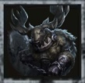

2026年10月の激推しハンター ①
断罪狩人（ベイン）
臨界点で引き留める不要。通電後も強いハンター
ここが激アツ（へむへむの推し理由）
- 臨界点で「引き留める」なしが最強に臨界点の登場で、引き留めるを採用しない形が最強になった。もともと傲慢・裏向きカードを採用したかったベインが、それを採用しても通電後も強い立ち回りを取れる。
- 通電後の引き分け性能が高い通電後、負傷サバイバーを臨界点で即ダウンさせ、瞬間移動でもう1人ダウンを取れるので、引き分け性能が高くなっている。
- チェーン無限で機動力最強チェーンを無限につなげて移動できるので機動力が最強。落下場所もチェーンでショートカットできたりと、無限大の可能性がある。
- 強化でチェーンへの粘着がほぼ効かない7月の強化で、チェーンへの粘着はほぼできないに等しくなった。
- そもそもの性能が強いチェーンによる救助狩り、罠チェーンで椅子耐久5割越え、罠による進路妨害・暗号機守り・ゲート守り・救助狩りと、できることが多い。
- チェーンで捕まえたら位置がバレるチェーンにとらえられたサバイバーは、一定時間後にハンターへ場所がバレるのもえぐい点。
2026年7月2日の強化ポイント
- チェーンクロウのクールタイムが14秒→13秒
- 命中時、対象の近くにいる別のサバイバーも同時に引き寄せる
- 自由に動けない位置に引き寄せた時、短時間ベインとの衝突を無視する
スキルのおさらい
- チェーンクロウ：サバイバーに当てると引き寄せて減速。操作中に当てると恐怖の一撃。障害物に当てると自分が引き寄せられる
- 存在感1以降：命中で0.5ダメージ、恐怖の一撃なら1.5ダメージ
- 憎しみの重圧：チェーン移動後の振動で、6m以内のサバイバーの移動速度10%・板窓操作8%ダウン。命中したサバイバーは30秒ごとに2回まで位置がバレる
- トラバサミ：最大8個。かかると8秒スタン＋解除後5秒位置バレ（椅子の付近・地下室には置けない）
立ち回り
チェイス中
- 板を倒す瞬間・窓を越える瞬間にチェーンを合わせる
- 板グルには無理に付き合わず、チェーンで圧をかけて逃げ場を減らす
- 通電後は負傷サバイバーを臨界点で即ダウン、瞬間移動で次のダウンへ
巡回・救助狩り
- チェーンをつないで暗号機を巡回。落下場所もチェーンでショートカット
- 罠で暗号機守り・ゲート守り・進路妨害
- 救助はチェーンと罠で救助狩りを狙う
使うときの注意
- おすすめの内在人格は、臨界点＋傲慢・裏向きカード（引き留めるは外す）
- 椅子の付近・地下室ではトラバサミを置けない（置いてあった分も消える）
へむへむの一言
7月の調整の時点で、最新情報の「へむへむの一言」で「ハンターからは断罪狩人が化けそう」と予想していたキャラ。→ 7月の最新情報を見る
みんなのコメント